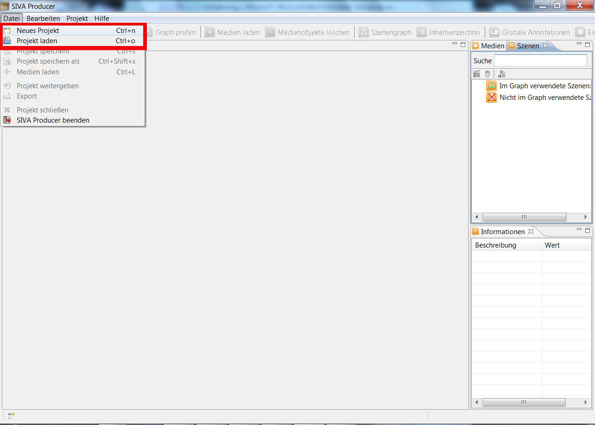
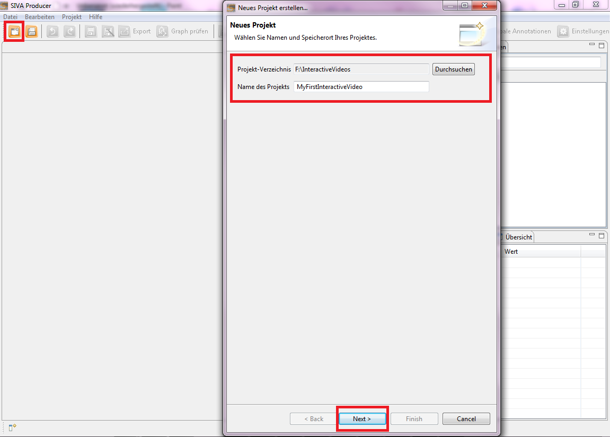
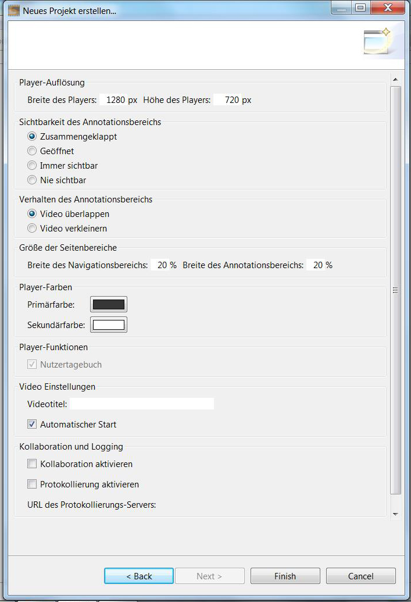
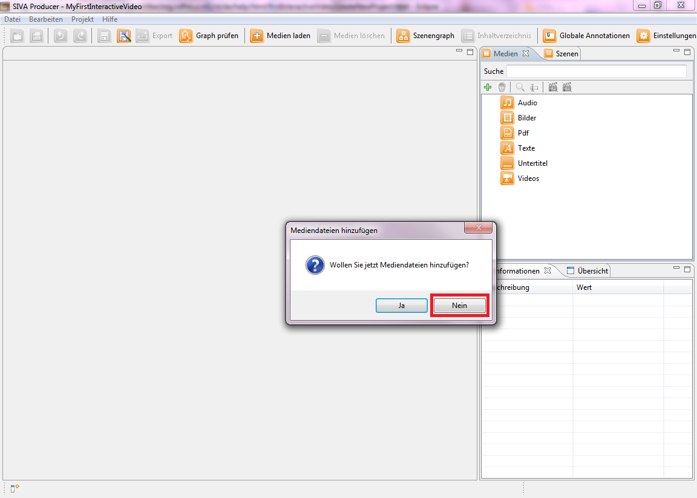
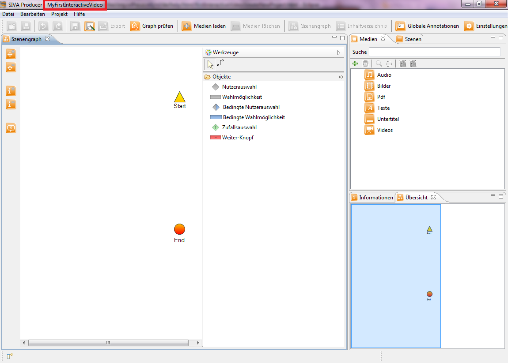

Wollen Sie ein bereits vorhandenes Projekt öffnen, so klicken Sie auf "Datei" und wählen "Projekt laden" aus.
Um ein neues Videoprojekt anzulegen klicken Sie auf "Datei" und wählen "Neues Projekt" aus.

Eine zweite Möglichkeit ein neues Projekt zu erstellen, ist einfach den Button "Neues Projekt anlegen" in der Symbolleiste
anzuklicken. Daraufhin öffnet sich das Fenster für das Anlegen eines neuen Projektes. Zuallererst bedarf es der Auswahl eines
Speicherortes, indem Sie auf den "Durchsuchen"-Button klicken und zum gewünschten Zielverzeichnis navigieren. Danach legen Sie
einen Projektnamen fest und klicken anschließend auf den "Weiter"-Button, um in den nächsten Dialog, der Auswahl des Startmoduses,
zu gelangen.

Nun öffnet sich ein Dialogfenster in dem Sie das Design des Players bestimmen können. Dazu stehen Ihnen einige Auswahlmöglichkeiten
zur Verfügung.
Beispielsweise können Sie auswählen, ob der Annotationsbereich sichtbar ist, wie groß die Seitenbereiche sein sollen oder wie die
Playerfarben aussehen sollen.

Durch Betätigen des "Finish"-Buttons erscheint ein Pop-up-Fenster, in dem Sie gefragt werden, ob
Sie jetzt Mediendateien hinzufügen möchten. Bitte klicken Sie in diesem Fenster auf den "Nein"-Button, da Ihnen in diesem Tutorial
gezeigt wird, wie Sie Medien manuell hinzufügen.

Daraufhin schließt sich das Fenster und Sie haben erfolgreich das Projekt unter angegebenem Namen im angegebenen Zielverzeichnis
angelegt.
Der erste Schritt ist getan und Sie befinden sich nun im Projektdialog, der so aussehen soll.

Als nächstes wird Ihnen erklärt wie Sie in SIVA ein Medium laden. Klicken Sie bitte hierfür auf den nächsten Menüpunkt "Hinzufügen von Mediendateien" im Hilfeverzeichnis auf der linken Seite oder auf nachstehenden Link. Hinzufügen von Mediendateien